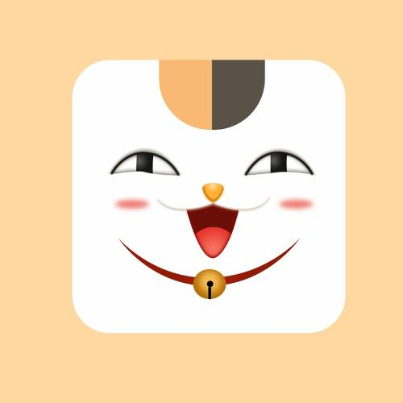

n.(名词)[C]页边空白 blank space round the written or printed matter on a page[C]边,边缘 edge or border[C]差数,差额; 余地 an amount
by which one thing is greater than another
n.(名词)[C]页边空白 blank space round the written or printed matter on a page[C]边,边缘 edge or border[C]差数,差额; 余地 an amount
by which one thing is greater than another
n.(名词)[C]页边空白 blank space round the written or printed matter on a page[C]边,边缘 edge or border[C]差数,差额; 余地 an amount
by which one thing is greater than another
n.(名词)[C]页边空白 blank space round the written or printed matter on a page[C]边,边缘 edge or border[C]差数,差额; 余地 an amount
by which one thing is greater than another
内联元素1
内联元素2
inline-block-box
inline-block-box

在生命辉煌圣殿上
曾留下自己的仰望
谁真的甘于无声的消亡
平凡世界平凡的他
固执或过于理想化
有梦想的人渺小却伟大
一路上困惑和挣扎
我陪你说一路真心的话
把嘲弄当做个笑话
时间会给出最好的回答
别去想它世界很大勇敢去表达
抬头仰望不知方向
就低头前往心灵归宿的地方
看一本书做一场梦
一次别离或是重逢
都是人生赐给你的恩宠
平凡世界平凡的她
平凡的相信着童话
平凡的我们渺小却伟大
一路上困惑和挣扎
为你打call说出真心的话
把嘲弄当做个笑话
时间会给出最好的回答
别去想它世界很大勇敢去表达
一路上狂欢和繁华
为你打call说出真心的话
那通往梦想的地方
最终会改变世界的形状
世界很大在你脚下勇敢去表达
浩瀚宇宙人若蜉蝣
虽然渺小却很伟大